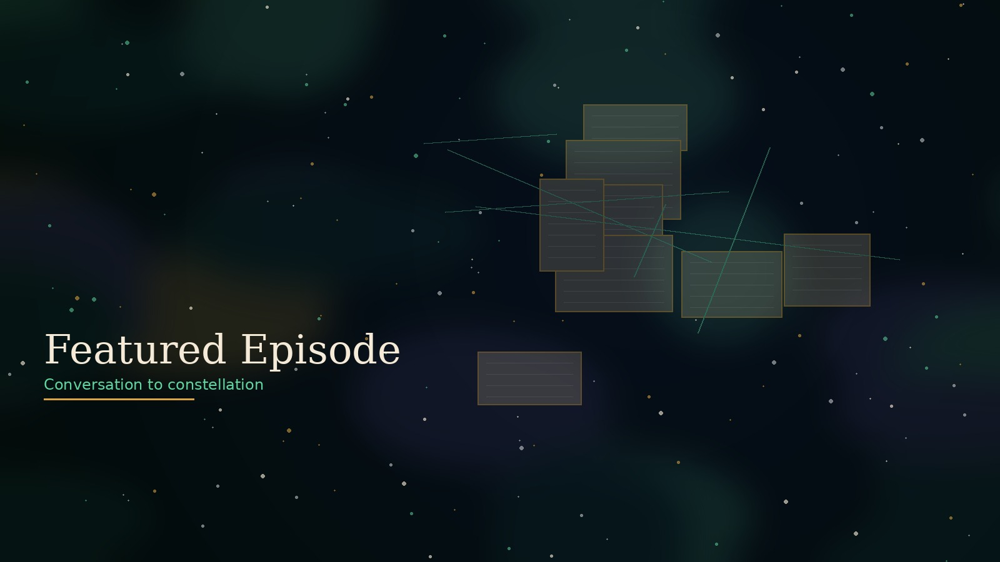
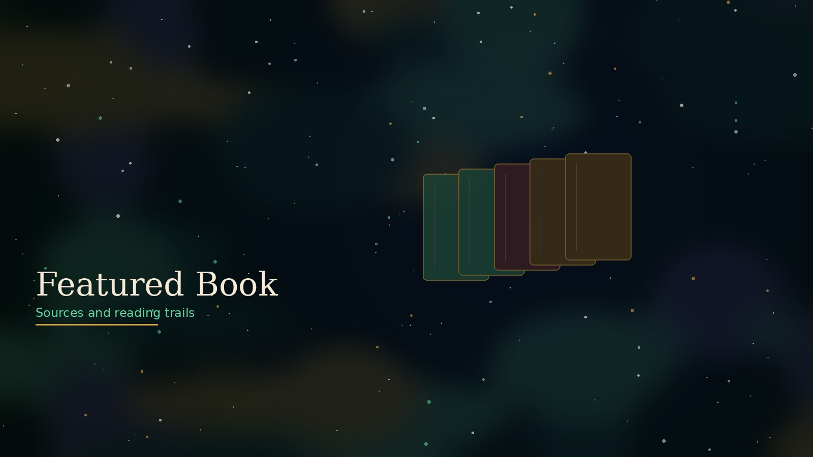
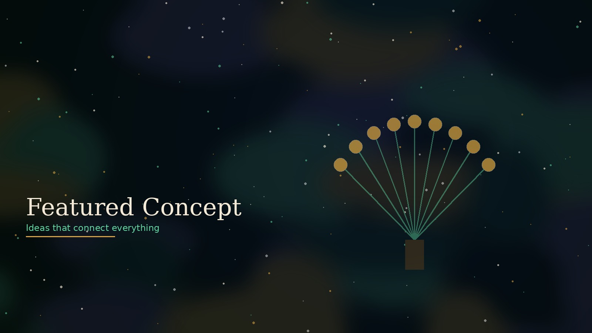
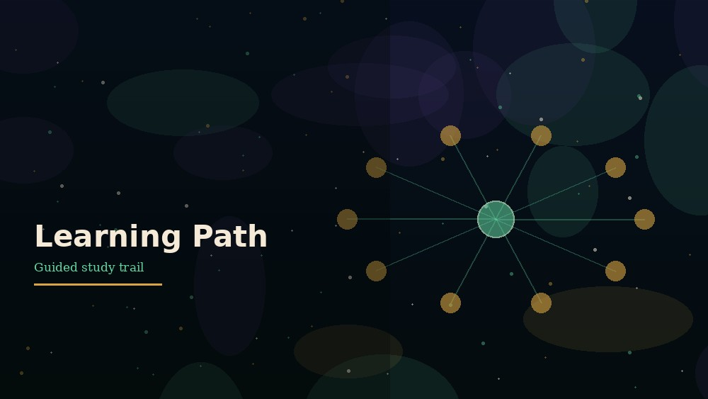

Museum Entrance
Start your journey through the Atlas.
Explore →
A living map of conversations,
ideas, history, and reflection.
A living map of conversations, ideas, history, and reflection.
Atlas Architecture
Start your journey through the Atlas.
Explore →Episodes, people, books, and concepts.
Explore →Maps, timelines, and historical journeys.
Explore →Paths, courses, and weekly challenges.
Explore →Journal vault and AI reflections.
Explore →Newsletter, blog, and community.
Explore →
A deep dive into intelligence, geopolitics, influence, and modern power structures.
View Episode →
Stephen Kinzer
View Book →
Unelected power structures that influence government and society.
Explore Concept →
12 lessons · Beginner
Start Path →Explore the World Map
Journey Through Time
Featured Learning Paths
12 lessons · Beginner
Start Path →15 lessons · Intermediate
Start Path →14 lessons · Advanced
Start Path →